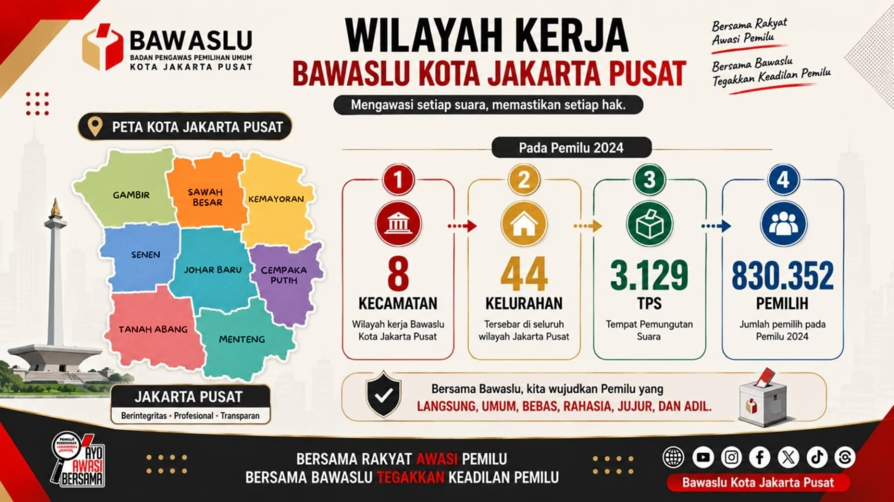

Mengenal tugas Bawaslu
Pemahaman tentang mandat, fungsi, dan peran Bawaslu di masa tahapan maupun non-tahapan.
BACA MATERI →Platform digital terpadu untuk mengakses informasi kelembagaan, edukasi kepemiluan, publikasi pengawasan, data visual, dan ruang partisipasi masyarakat di Jakarta Pusat.

Sekretariat Bawaslu Kabupaten/Kota memberikan dukungan administrasi dan teknis operasional kepada Bawaslu Kabupaten/Kota serta berkoordinasi dengan pemerintah daerah dan instansi terkait.
Fungsi sekretariat mencakup dukungan administrasi, perencanaan dan keuangan, fasilitasi pengawasan Pemilu, penanganan pelanggaran, penyelesaian sengketa proses Pemilu, advokasi hukum, serta pengumpulan, pengolahan, dan penyajian data.
Lihat pusat informasiMateri edukasi yang dapat dikembangkan menjadi pustaka digital dan modul pembelajaran.
Pemahaman tentang mandat, fungsi, dan peran Bawaslu di masa tahapan maupun non-tahapan.
BACA MATERI →Pengetahuan dasar untuk mengenali potensi pelanggaran dan membangun budaya sadar aturan.
IKUTI EDUKASI →Peran masyarakat dalam ikut mengawasi proses demokrasi secara bertanggung jawab.
GABUNG KOMUNITAS →Portal menyediakan informasi awal dan rujukan menuju kanal resmi. Formulir ini bukan kanal pelaporan dugaan pelanggaran.
Catat informasi dasar peristiwa yang diketahui, termasuk waktu, tempat, dan uraian kejadian.
Siapkan identitas dan bahan pendukung sesuai ketentuan serta prosedur resmi yang berlaku.
Konfirmasikan persyaratan dan sampaikan laporan melalui kantor atau kanal resmi Bawaslu.
Wadah berkelanjutan untuk memperluas literasi kepemiluan, membangun jejaring komunitas di kecamatan Jakarta Pusat, serta mendorong budaya pengawasan partisipatif yang mandiri.
Formulir contoh untuk mengumpulkan umpan balik. Penggunaan resmi perlu disesuaikan dengan instrumen SKM dan kebijakan pengelolaan data.
Pratinjau area admin. Autentikasi, basis data, penyimpanan dokumen, dan manajemen hak akses perlu dibangun pada backend.